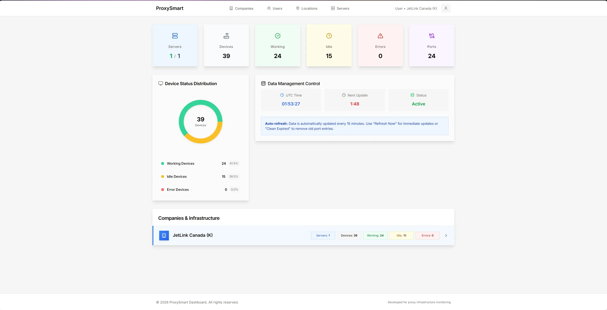

Data Analyst — Jetlink Solutions
Fixing problems day to day, then building ProxySmart, the monitoring dashboard that helped cut system costs by 25%.

Overview
At Jetlink Solutions I worked as a technical support specialist and data analyst. Day to day I handled hardware and software issues and resolved them promptly so the team could keep working.
The dashboard
I built ProxySmart, a custom dashboard for tracking the performance of JetLink Canada's proxy infrastructure. It shows how many servers are online, how many devices are working, idle or in an error state, and how many ports are in use.
Data refreshes automatically every 15 minutes, with options to refresh on demand and clear expired port entries.
Using the dashboard, management cut system costs by 25%.